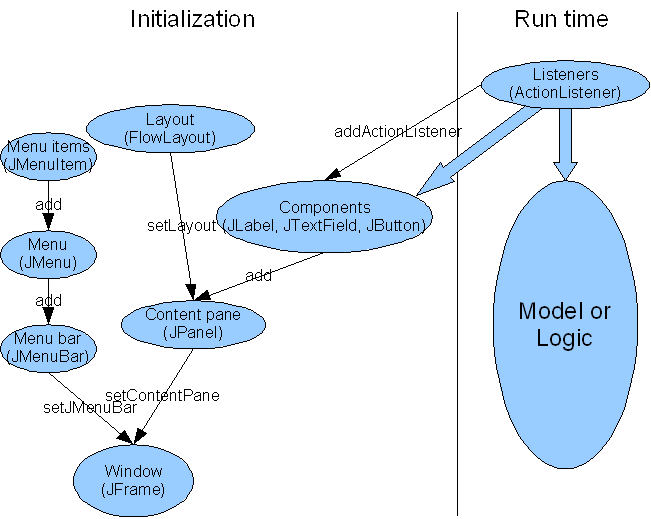

GUI 7 - Overall organization
Purpose of this lesson: Big picture outline of GUI parts.

Top-level Containers are windows (JFrame, JDialog). Each window has two intermediate containers that are commonly used - a menu bar which contains the menus, and the content pane which holds the components. If there is no menu bar, the content pane expands to fill that area.
Intermediate Containers (eg, JPanel) contain components. Every container must have a layout manager.
Layouts (sometimes called layout managers) specify how to arrange and size components in a JPanel (or other intermediate container). Every JPanel starts with a default layout manager, but it's better to set it explicitly. Common layout managers include FlowLayout, BorderLayout, GridLayout, GridBagLayout, etc.
Components are user interface controls like buttons (JButton, ...), text boxes (JTextField, JTextArea, ...), labels (JLabel), etc. These are added to a container with the add() method.
Listeners are attached to components and their methods are called when the component is used (eg, a button is clicked). The listeners interact with the model, the basic logic of the program.
Other. These are essential elements for user interfaces, but others will be useful in some programs, eg, graphics, animation, mouse, keyboard, sound, threads, look anb feel, ...